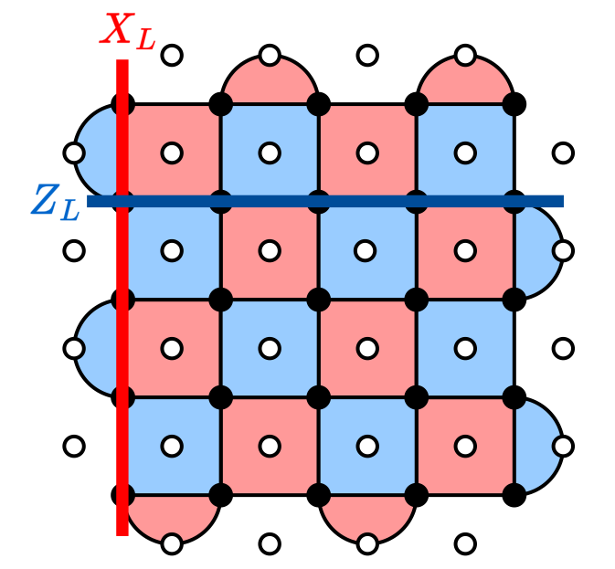
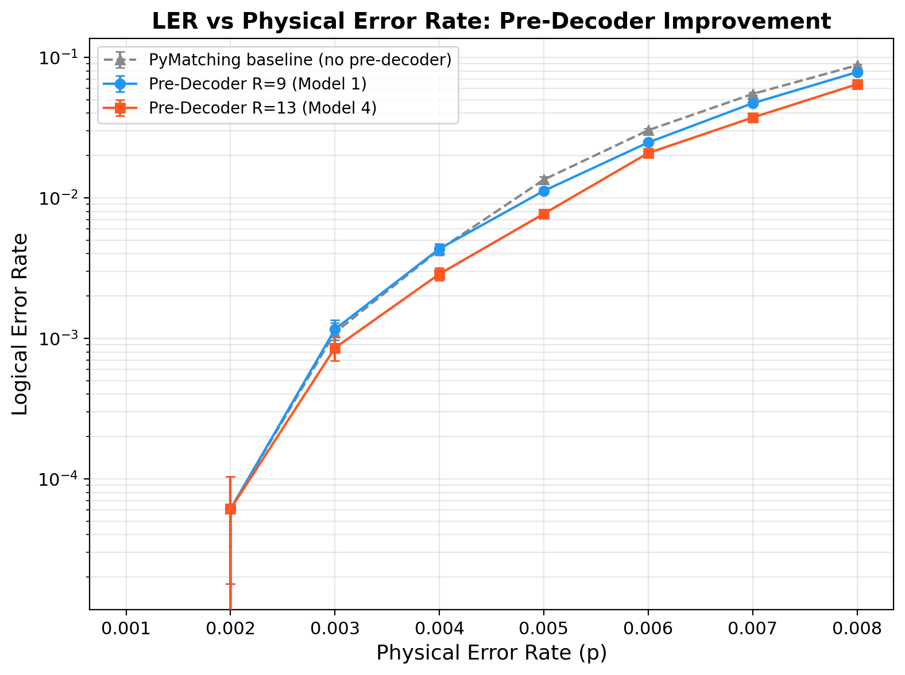
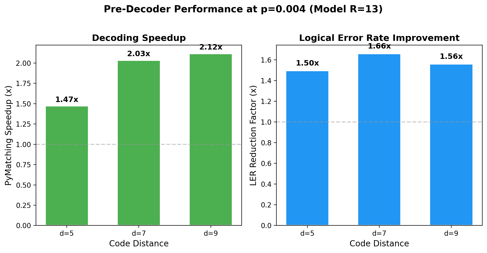
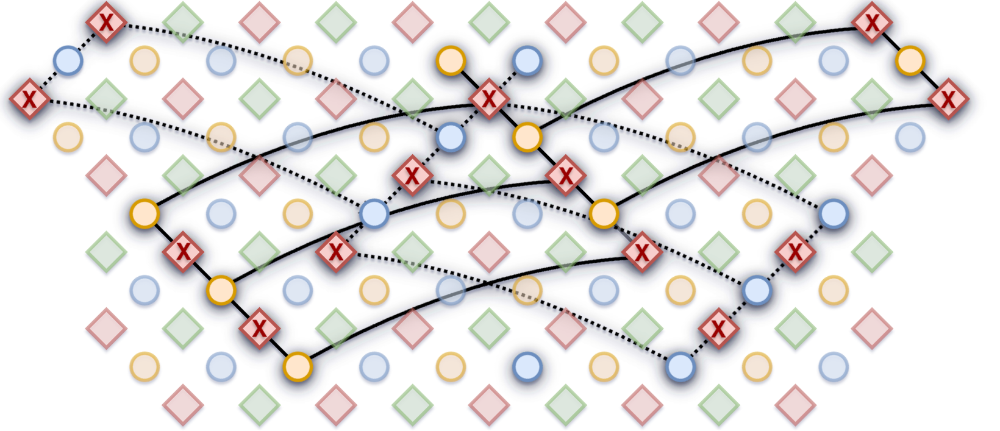
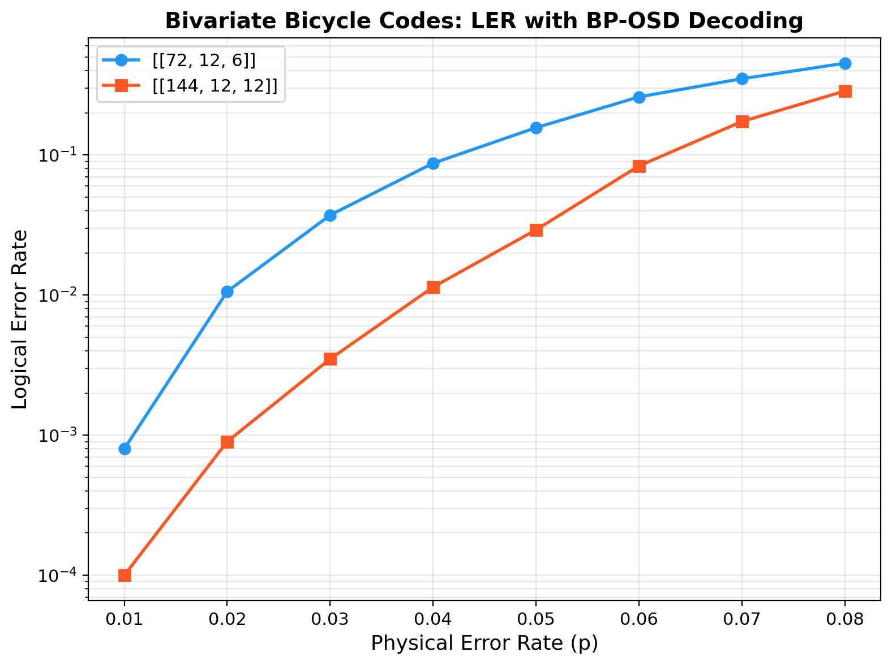
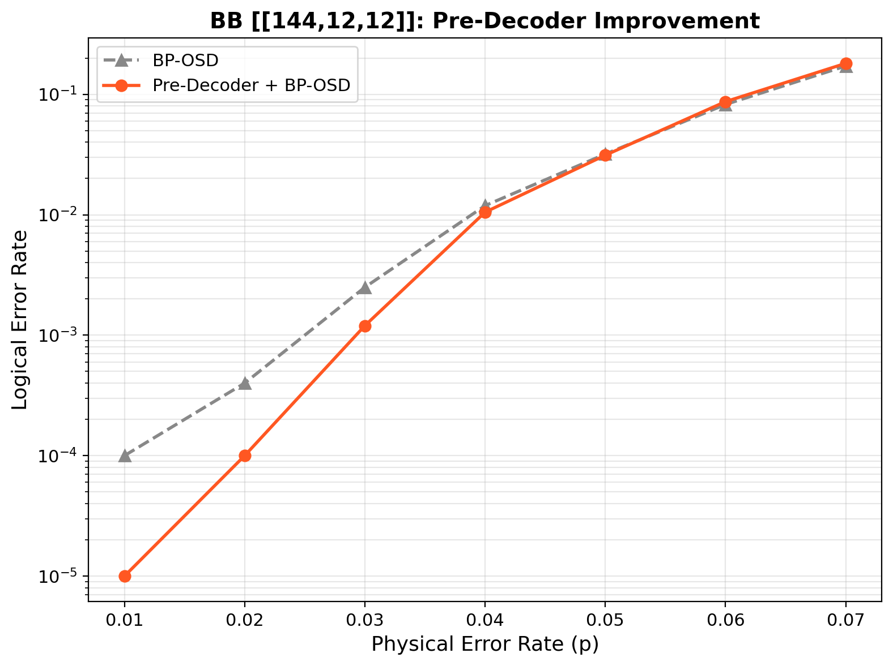
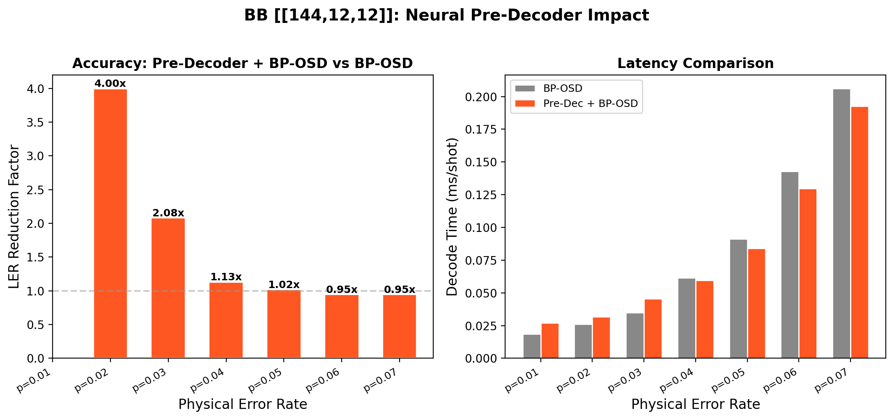

Quantum error correction (QEC) is essential for fault-tolerant quantum computing — but decoding must keep pace with the hardware. As part of the NVIDIA Ising open model family, a neural pre-decoder using a 3D CNN was released to reduce syndrome density in surface code decoding workflows. In this post, we put it to the test — evaluating its impact on logical error rates and decoding speed, then pushing the idea further to see how well neural pre-decoding generalizes to qLDPC codes.
Surface codes, however, carry a fundamental encoding rate limitation: \(d^2\) data qubits per logical qubit. Quantum LDPC codes — particularly bivariate bicycle (BB) codes [1] — break this barrier with dramatically better encoding rates. But their non-local, non-planar check connectivity means the CNN pre-decoder, designed for the surface code's regular grid, cannot directly apply.
This raises the question we set out to test: can neural pre-decoders be effective for codes that don't live on a regular lattice?
We first benchmark the CNN pre-decoder on surface codes, then test a simple MLP pre-decoder on BB codes — implementing BB code construction, BP-OSD decoding, and evaluating end-to-end performance. By comparing both settings, we identify what works, what doesn't, and where the gaps are.
Part I: Testing the CNN Pre-Decoder on Surface Codes

The NVIDIA Ising surface code pre-decoder is a 3D CNN that operates on detector syndrome tensors of shape \((B, 4, T, D, D)\) — four channels (X/Z syndromes + presence masks) across \(T\) measurement rounds and a \(D \times D\) spatial grid. The network processes this tensor through residual 3D convolutional blocks, outputting corrected syndromes with reduced density. These are then passed to PyMatching (MWPM) for the final logical error decision.
The architecture exploits the surface code's regular lattice: each convolutional layer captures local spatiotemporal error correlations within its receptive field \(R = 1 + \Sigma(k_i - 1)\), and the regular grid means every spatial position is treated uniformly. Two pre-trained models are available — \(R=9\) (4 layers, ~913K params) and \(R=13\) (6 layers, ~1.8M params), trained with a 25-parameter circuit-level noise model [3][5].
Test 1: LER Across Physical Error Rates
We sweep the physical error rate \(p\) from 0.001 to 0.008 and measure LER at distance 9:

Test 2: Decoding Speedup Across Distances
By reducing syndrome density, the pre-decoder should make PyMatching's job easier — sparser syndromes mean fewer matching edges and lower decode latency. We measure this directly:

| Distance | PyMatching Speedup | LER Reduction |
|---|---|---|
| \(d = 5\) | 1.47x | 1.50x |
| \(d = 7\) | 2.03x | 1.66x |
| \(d = 9\) | 2.12x | 1.56x |
The results confirm consistent improvements: up to 2.12x faster decoding and up to 1.66x lower LER, with the speedup growing at larger distances.
Why Can a Pre-Decoder Beat PyMatching?
Three factors make this work:
- Circuit-level noise has spatiotemporal correlations that the DEM only approximates.
- The CNN solves the easy part; PyMatching solves the hard part.
- A random CNN would make things worse, confirming this is learned behavior.
In short: MWPM is near-optimal given its DEM, but the DEM is an approximation. The CNN bridges the gap.
Part II: Bivariate Bicycle Codes
The Encoding Rate Problem
qLDPC codes offer a fundamentally different tradeoff [8]. BB codes [1] strike an attractive balance:
| Code | \(n\) | \(k\) | \(d\) | Rate \(k/n\) |
|---|---|---|---|---|
| BB-72 | 72 | 12 | 6 | 16.7% |
| BB-144 | 144 | 12 | 12 | 8.3% |
| Surface \(d=6\) | 36 | 1 | 6 | 2.8% |
| Surface \(d=12\) | 144 | 1 | 12 | 0.7% |

Code Construction
A BB code is defined over \(\mathbb{Z}_\ell \times \mathbb{Z}_m\) with polynomials \(A(x,y)\) and \(B(x,y)\):
\[ H_X = [A \mid B], \quad H_Z = [B^T \mid A^T] \]
# [[72, 12, 6]]: l=6, m=6
A = poly_to_matrix([(3,0), (0,1), (0,2)], 6, 6)
B = poly_to_matrix([(0,3), (1,0), (2,0)], 6, 6)
Hx = sp.hstack([A, B]) # 36 x 72
Hz = sp.hstack([B.T, A.T]) # 36 x 72Test 3: BP-OSD Baseline on BB Codes

Part III: Testing a Neural Pre-Decoder for BB Codes
As a first test, we implement an MLP pre-decoder that takes the full syndrome as input and outputs refined per-qubit error probabilities for BP-OSD:
Syndrome → MLP → Refined Channel Probs → BP-OSD → CorrectionTest 4: MLP Pre-Decoder vs. BP-OSD Alone


| \(p\) | BP-OSD | Pre-Dec + BP-OSD | Improvement |
|---|---|---|---|
| 0.02 | 0.0004 | 0.0001 | 4.0x |
| 0.03 | 0.0025 | 0.0012 | 2.1x |
| 0.04 | 0.0119 | 0.0105 | 1.13x |
| 0.05 | 0.0319 | 0.0312 | ~1.0x |
| 0.06 | 0.0823 | 0.0869 | 0.95x |
Analysis: What the Tests Reveal About Architecture-Code Alignment
| Surface Code CNN | BB Code MLP | |
|---|---|---|
| Architecture | 3D CNN (local, grid-aligned) | MLP (global, unstructured) |
| LER Reduction | Up to 1.66x (consistent) | Up to 4.0x (low \(p\) only) |
| Speedup | Up to 2.12x | Moderate overhead |
| Noise Model | 25-param circuit-level | Code-capacity (i.i.d.) |
The surface code CNN delivers consistent improvement because the architecture matches the code's lattice. The BB code MLP shows moderate gains at low \(p\) that vanish above threshold.
The next step: test pre-decoders that are structurally aligned with qLDPC codes.
Future Work
- CNN + MLP hybrids for quasi-cyclic BB code structure
- Graph neural networks on the Tanner graph
- Learned symmetry breaking for degeneracy
- Hardware-aware adaptation with device-specific noise
Try It Yourself
pip install numpy scipy ldpc torch
# Surface code pre-decoder (requires GPU)
WORKFLOW=inference bash code/scripts/local_run.sh
# BB code: LER comparison
python blog/bb_code_demo.py --shots 10000 --mode ler
# BB code: pre-decoder comparison
python blog/bb_code_demo.py --shots 10000 --mode compareAll code is available as part of the NVIDIA Ising open model family.